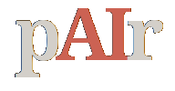

01
On som?
Pregunta del màsterQuè hauria d’haver canviat quan acabem?

La sala de màquines
Un espai de treball per preparar, conduir i tancar una pAIr Session sense perdre el fil ni convertir les eines en protagonistes.
Pregunta del màsterQuè hauria d’haver canviat quan acabem?
Obrir i fer
Tria per necessitat, no per marca. Algunes funcions poden requerir compte o subscripció.
Pensar, contrastar, escriure i construir amb context compartit.
#conversaTreball llarg amb documents, anàlisi i artefactes interactius.
#documentsExploració multimodal i treball connectat a l’ecosistema Google.
#multimodalConversar amb un corpus tancat de fonts i materials del projecte.
#fontsPrimera exploració web amb referències per obrir i verificar.
#webCerca de literatura acadèmica i seguiment de citacions.
#evidènciaMapa compartit amb post-its, votació, plantilles i spotlight.
#col·laborarTaller visual complet amb temporitzador, votació i facilitació.
#facilitarPissarra immediata, informal i col·laborativa sense fricció.
#dibuixarPresentacions, peces visuals i prototips de comunicació ràpids.
#comunicarCodi, versions, incidències i memòria verificable del projecte.
#codiPrototips web executables al navegador i fàcils de compartir.
#prototipCarpeta compartida per materials, actes i lliurables finals.
#arxiuDissenyar l’agenda, els blocs, els temps i el guió del màster.
#agendaFormularis nets per al briefing, decisions i retorn posterior.
#feedbackQuan et cal una dinàmica
Formats per distribuir la participació i evitar que una sola veu domini.
Mètodes i activitats de facilitació cercables per objectiu i durada.
Mètodes de disseny centrat en les persones, de la recerca al prototip.
Dinàmiques pràctiques per alinear, decidir i revisar el treball d’un equip.